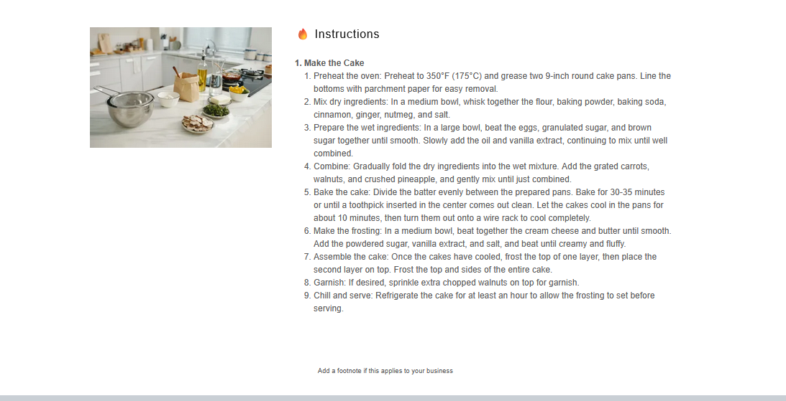

Desserts
Carrot Cake
A classic carrot cake with walnuts, pineapple, warm spices, and cream cheese frosting.
Ingredients
Cake
- 2 cups all-purpose flour
- 2 tsp baking powder
- 1½ tsp baking soda
- 1½ tsp ground cinnamon
- ½ tsp ground ginger
- ¼ tsp ground nutmeg
- ½ tsp salt
- 4 large eggs
- 1½ cups granulated sugar
- 1 cup brown sugar, packed
- 1 cup vegetable oil or melted coconut oil
- 2 tsp vanilla extract
- 3 cups grated carrots
- 1 cup chopped walnuts
- ½ cup crushed pineapple, drained
Cream Cheese Frosting
- 1 cup unsalted butter, softened
- 16 oz cream cheese, softened
- 4 cups powdered sugar
- 2 tsp vanilla extract
- Pinch of salt
Instructions
1
Prepare
Preheat oven to 350°F. Grease two 9-inch round cake pans and line the bottoms with parchment paper.
2
Mix dry ingredients
Whisk flour, baking powder, baking soda, cinnamon, ginger, nutmeg, and salt.
3
Mix wet ingredients
Beat eggs, granulated sugar, brown sugar, oil, and vanilla until smooth.
4
Combine
Fold dry ingredients into wet ingredients. Add carrots, walnuts, and pineapple and mix until just combined.
5
Bake
Divide batter between pans and bake 30–35 minutes, or until a toothpick comes out clean. Cool completely.
6
Frost
Beat cream cheese and butter until smooth. Add powdered sugar, vanilla, and salt and beat until fluffy. Frost cooled cake and chill before serving.
Notes
- Chilling for at least an hour helps the frosting set before slicing.